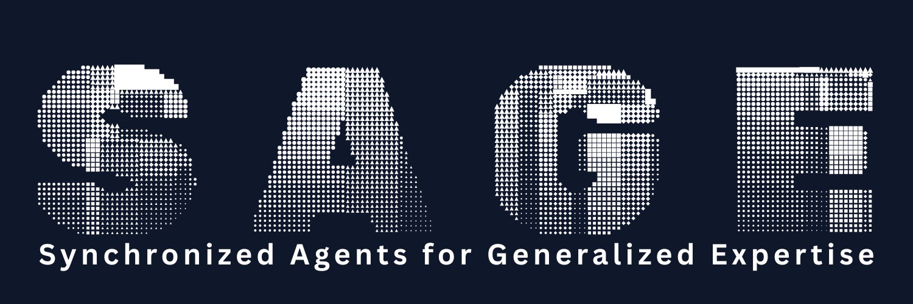
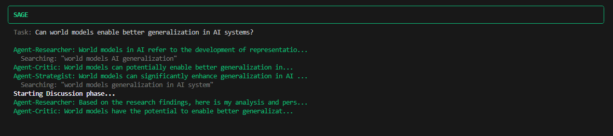
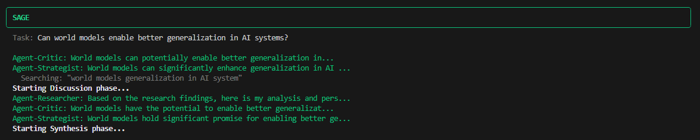
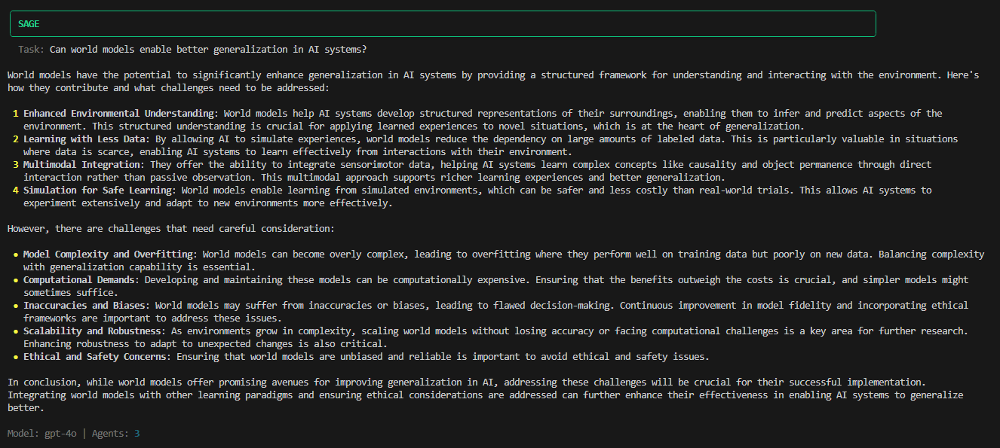

Ask a language model a question and you get one answer. One perspective. One viewpoint. That works fine for simple queries. But complex problems like architecture decisions, security reviews, or research questions benefit from multiple angles. A single model, no matter how capable, has blind spots.
SAGE takes a different approach. Instead of relying on one model's response, it puts together a team of specialized agents. Each agent has a distinct role: one gathers facts, another pokes holes in arguments, a third proposes solutions. They work independently at first, then share findings and challenge each other before producing a final, synthesized answer. You can run it from your terminal or import it as a Python library into your own code.
The idea is simple: multiple perspectives catch what one might miss.
Every question runs through three phases. In the first phase, research, each agent investigates on their own. The researcher might search the web for current best practices while the critic looks for common pitfalls. They don't see each other's work yet. This prevents groupthink and ensures diverse starting points.

Research phase: agents gather information independently
The second phase is discussion. Agents now see what others found. The critic challenges the researcher's assumptions. The strategist builds on both perspectives. They can run code to validate technical claims or do additional searches to fill gaps. This is where the real value shows up. Agents catch each other's blind spots, question assumptions, and refine ideas together.

Discussion phase: agents share findings and debate
Finally, synthesis. All perspectives merge into a final answer. Points of agreement get emphasized. Disagreements are flagged rather than hidden. The output addresses the original question while incorporating the diverse viewpoints that came up during discussion.

Synthesis phase: perspectives merge into a final answer
SAGE runs in your terminal. It's available on PyPI, so installation takes one command:
pip install agentsageAfter setting an API key for your preferred provider, you can run it directly from the terminal:
sage "What database should I use for a high-traffic e-commerce platform?"By default, SAGE puts together three agents: a researcher, a critic, and a strategist. It then runs the three-phase workflow. The whole process takes longer than a single API call, but the output tends to be more thorough and balanced.
You can customize the agent team for different use cases. A security review might use security analysts, compliance experts, and penetration testers. An architecture review might bring together system architects, DevOps engineers, and performance specialists. Just define roles and focus areas that fit your specific problem.
sage "Review this authentication flow" --agents security,compliance,reviewerFor integration into larger systems, SAGE provides a Python API. The basic pattern involves creating a Sage instance, defining agents, and calling the solve method:
from sage import Sage, Agent
sage = Sage(model="gpt-4o")
agents = [
Agent(role="researcher", focus="Gather relevant facts and data"),
Agent(role="critic", focus="Identify flaws and counterarguments"),
Agent(role="strategist", focus="Propose practical solutions"),
]
result = sage.solve(
"How should we handle authentication in our microservices?",
agents
)
print(result.summary)The API supports callbacks for tracking progress in real-time, configuration options for controlling agent behavior, and structured access to individual agent contributions. Results can be exported as JSON for further processing.
Custom agent teams open up interesting possibilities. A security team might include a security analyst focused on vulnerabilities, a compliance expert checking regulatory requirements, and someone thinking like an attacker. An architecture team could combine perspectives from system design, operations, and performance engineering. The agents are just roles with instructions, so you can define whatever combination fits your use case.
SAGE works with models from OpenAI, Anthropic, Google, and Ollama. The provider is auto-detected from the model name, so switching between providers is straightforward:
sage = Sage(model="gpt-4o") # OpenAI
sage = Sage(model="claude-sonnet-4-5") # Anthropic
sage = Sage(model="gemini-2.5-flash") # Google
sage = Sage(model="llama3.2:latest") # Ollama (local)Running locally with Ollama means no API costs and full privacy. All processing stays on your machine. Cloud providers offer stronger reasoning capabilities but come with latency and cost considerations, especially since each agent makes separate API calls.
SAGE includes nine predefined roles: researcher, critic, strategist, analyst, creative, technical, reviewer, security, and performance. Each has default focus instructions tuned for its purpose. The researcher gathers facts. The critic identifies flaws and counterarguments. The strategist proposes practical next steps. And so on.
These defaults work for general use, but the real power comes from customization. Any role can be overridden with specific instructions, and entirely new roles can be created. A "regulatory_expert" might focus on compliance implications. A "cost_analyst" might evaluate financial trade-offs. The framework doesn't limit the types of perspectives you can bring together.
The multi-agent approach has costs. Simple questions gain nothing from deliberation, just added latency and expense. The three-phase workflow makes multiple API calls per agent, which adds up. And there's no guarantee the agents will actually disagree productively. They sometimes converge too quickly on consensus.
But for complex questions where thoroughness matters more than speed, the approach has merit. Architecture decisions, security reviews, and research questions benefit from structured debate. The output captures nuance that single-shot responses often miss.
SAGE is open source under the MIT license. The code is available on GitHub, and the package can be installed from PyPI with pip install agentsage.